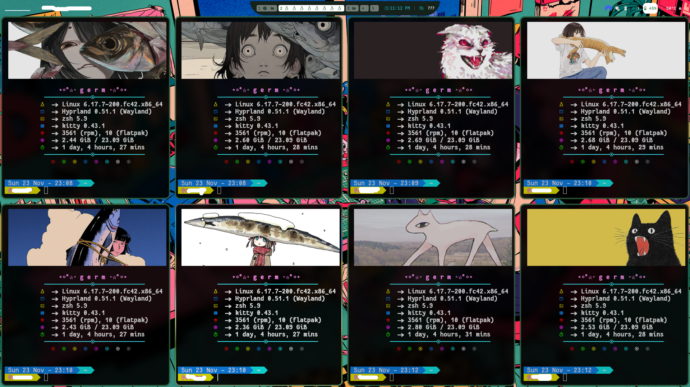
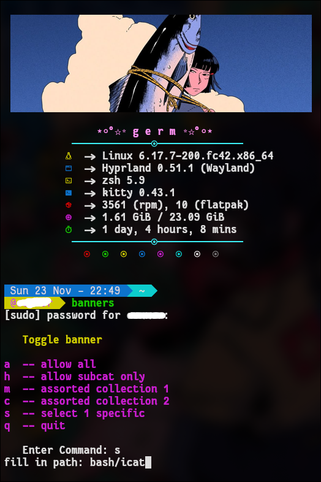

banner toggle
This is a script I wrote to toggle between a few different collections of art files/different themes I have made for my terminal-
such as fish related/cat related/etc.

it's pretty simple but kind of clever I think.

basically when you select an option from this list it will delete and replace the line of my random file picking script that gets piped into fastfetch upon terminal startup. replacing the path to the various directories I have set up
pretty cool stuff. And then also I included the specific path option [s] if you ever only want to use the same 1 image